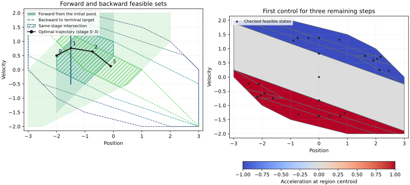
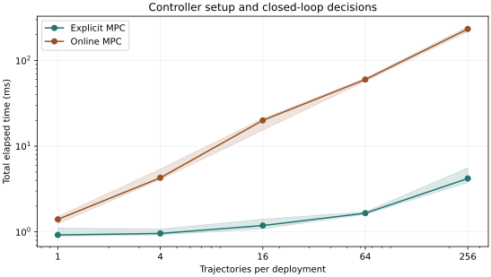

When does explicit MPC repay its setup cost?
For one three-step trajectory starting at (−2, 0.5), the compiled feedback controller took a median of 0.922 ms, including construction. Updating and solving the online quadratic program took 1.401 ms, including setup. Explicit MPC finished first in all five pairs at one trajectory, the smallest volume tested. These observations apply to the fixture, implementations, host and workload below.
The control problem
At each of three unit steps observe position p and velocity v, apply acceleration u, and update (p, v) ↦ (p + v, v + u). The bounds are |p| ≤ 3, |v| ≤ 2 and |u| ≤ 1. At the terminal stage both |p + v| ≤ 1 and |p + 2v| ≤ 1. Minimize p₃² + v₃² + ¼∑uₖ². The positive control weight makes the minimizing history unique. The plant has a single decision maker.

How the controllers agree
The native explicit controller enumerates active constraint sets and stores a polygon and a first-action law for each region. The online controller condenses the same problem into a positive-definite QP, updates it at each observation, and passes a feasible tail and a logical basis to HiGHS at shorter horizons. The exact reference finds 7, 11 and 11 regions for one, two and three remaining steps, with feasible areas 21/2, 31/2 and 37/2. A rational predecessor calculation independently verifies each domain.
The checker matched the native regions and affine laws and checked 155 states, including six infeasible cases. It replayed every observed state, action and cost in the timed episodes. A separate direct-rollout SciPy solve checked 149 feasible states. In a diagnostic-only build, the HiGHS initializer took the supplied warm-start branch in all 12 tested shortened-horizon calls. The timed executable used the ordinary pinned library. It supplied 3960 shifted starts and recorded 0 cold retries, counting warmups.
Setup and feedback time
Each workload has one excluded warmup pair and five measured pairs in alternating order. Both sides start with fresh controllers at every deployment. The online solver retains its per-horizon model across the trajectories within a batch. The explicit policy owns 4,800 bytes in its C++ objects and allocated vector capacities, excluding allocator overhead. Decision p99 uses the nearest rank over all measured decisions in that workload, including infeasible queries.
| Trajectories | Explicit total ms median (min–max) | Explicit decision p99 µs | Online total ms median (min–max) | Online decision p99 µs | Explicit faster out of 5 |
|---|---|---|---|---|---|
| 1 | 0.922 (0.893–1.110) | 4.75 | 1.401 (1.248–1.511) | 884.62 | 5 |
| 4 | 0.960 (0.922–1.078) | 2.44 | 4.285 (4.091–5.401) | 1304.92 | 5 |
| 16 | 1.186 (1.091–1.408) | 4.82 | 20.026 (15.415–20.992) | 1603.43 | 5 |
| 64 | 1.655 (1.603–1.713) | 3.84 | 60.058 (57.279–62.236) | 1120.96 | 5 |
| 256 | 4.203 (3.773–5.591) | 4.82 | 233.316 (217.578–248.113) | 956.69 | 5 |

The service was pinned to logical CPU 7 on an AMD Ryzen 5 3550H. The systemd service used a one-CPU quota, 1 GiB memory, zero swap and a 300-second wall limit. CPU sharing with other host work and the fixed fixture limit generalization. Construction costs, tail latencies and the crossover can change with horizon, constraints and workload.
Reproduce and inspect
Configure the source revision below with CMake in Release mode and CSL_BUILD_MPC08_REPORT=ON. Build csl_mpc08_crossover, then supply workload.json and a fresh output filename. The offline bundle includes the independent checker and figure renderer.
On Linux with a user systemd manager and cgroup v2, run these commands from the unpacked study directory. Set driver to the absolute path of your Release executable. This capture used CPU 7. Select an available CPU on another host and record the change.
driver=/absolute/path/to/csl_mpc08_crossover run_dir=$(mktemp -d) cp workload.json "$run_dir/" systemd-run --user --wait --pipe --collect \ -p CPUAffinity=7 -p CPUQuota=100% -p MemoryMax=1G \ -p MemorySwapMax=0 -p RuntimeMaxSec=300 \ /usr/bin/bash "$PWD/validation/cgroup-run.sh" "$run_dir" "$driver" python source/check_crossover.py "$run_dir/workload.json" "$run_dir/raw.jsonl" "$run_dir/summary.json"
To check the saved measurement offline with Python’s standard library, run
python source/check_crossover.py workload.json raw.jsonl checked-summary.json
Raw attempts · Summary · Exact cells and histories · Build and resource profile · Diagnostic warm starts · SHA-256 inventory
An earlier state-variable formulation produced a solver error on the one-step state (6139/12288, 2049/4096). HiGHS reported a primal violation of about 8.14×10⁻⁵. The timed solver removes the state equalities algebraically and passed the same query. The offline bundle retains the earlier implementation for inspection.
Measured source · Earlier MPC08 study · Bemporad et al. on explicit MPC